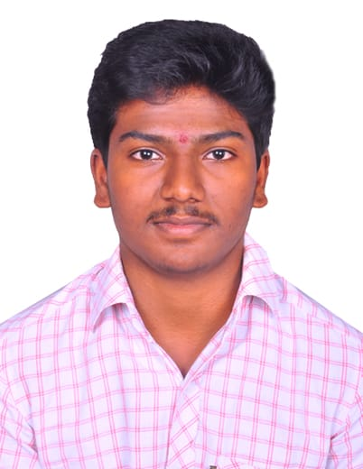

Vishnu Maragani

Summary :
Driven Computer Science graduate skilled in Java, SQL, and C programming languages. Gained practical experience with
VolPay 2X, VolPay 3X, and Volante Designer 6.5.1 during an intensive internship.
Known for keen attention to detail and robust problem-solving capabilities. Eager to leverage these attributes in a
challenging role.
Technical Skills :
- Proficient in:Java, C
- Familiar with:HTML, CSS
- Familiar with:HTML, CSS
- IDEs & Source Code Repositories:Eclipse, Volante Designer 6.5.1, VOLPAY 2.X, VOLPAY 3.X
- Databases:Oracle, MySQL
- Operating Systems:Windows
Professional Experience :
- Developer Intern | TECHWAVE CONSULTING INDIA PVT LTD, Hyderabad | December 2022 – Present
- Developed practical knowledge of VolPay 2X, VolPay 3X, and Volante Designer 6.5.1.
- Demonstrated adaptability in fast-paced tech environments
Education :
- B-Tech, Computer Science | Swarnandhra College Of Engineering And Technology, Narsapur | 2018 – 2022
- Intermediate |Vidyalaya Junior College, Gudivada | 2016 – 2018
- Secondary School Certificate (SSC) |Viswasanthi English Medium High School, Lingala | 2015 – 2016
Projects :
Mask Detection System (B. Tech Final Year Project)
- During my final year, I was part of a team that developed a system capable of identifying individuals not
wearing face masks. This project was aimed at raising safety awareness amidst health crises. My role
involved utilizing my moderate
skills in Java, C, and SQL to contribute to the system's development. The project served as a valuable
learning experience, helping me enhance my problem-solving and programming skills. Working as part of a
diverse team also improved my
communication and coordination abilities. Although the system was only tested in a controlled environment,
it demonstrated potential for real-world application.
Certifications :
- Volante Designer 6.5.1 Certification by VOLANTE - Validates proficiency in Volante Designer 6.5.1, a
crucial tool for financial message integration.
- Google Digital Garage Certification- Demonstrates a comprehensive understanding of digital marketing
basics.
Others :